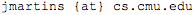

|
(if you can't see the ã learn to use unicode!) CMU|Portugal Dual Ph.D in CS, Carnegie Mellon University FCT/UNL  B.Sc in CS by FCT/UNL, 2008 M.Sc in CS by FCT/UNL, 2010 |
| > Research Interests_ |
|
. Cyber-physical systems . Beliefs . Logic . Argumentation Theory . Thesis proposal: Changing Beliefs in a Changing World |
| > Advisors_ |
| . João Leite
(FCT/UNL) . André Platzer (CMU) |
| > Publications_ |
| . S. Egilmez, J. Martins and J. Leite, Extending Social
Abstract Argumentation with votes on attacks, TAFA'13 (pdf). . V. Dahl, S. Egilmez, J. Martins, E. Miralles, On Failure-Driven Constraint-Based Parsing through CHRG, CHR'13 (pdf). . D. Henriques, J. G. Martins, P. Zuliani, A. Platzer, E. M. Clarke, Statistical Model Checking for Markov Decision Processes, QEST'12 (pdf). . J. Martins, A. Platzer, J. Leite, Statistical model checking for distributed probabilistic control hybrid automata with Smart Grid applications, ICFEM'11 (pdf, slides) . J. Leite, J. Martins, Social Abstract Argumentation, IJCAI'11 (pdf) . P. Torroni, M. Prandini, M. Ramilli, J. Leite, J. Martins, Arguments Against the Troll (position paper), ARGAIP'10 . J. Martins, J. Leite (adv.), Argumentation Systems with Social Voting, M.Sc Dissertation, 2010 (pdf) Tech Reports: . D. Henriques, J. G. Martins, P. Zuliani, A. Platzer, E. M. Clarke, Statistical Model Checking for Markov Decision Processes (Tech Report), CMU-CS-12-122 (pdf) . J. Martins, A. Platzer, J. Leite, Statistical model checking for distributed probabilistic control hybrid automata with Smart Grid applications (Tech Report), CMU-CS-11-119 (pdf) |
| > Research Misc_ |
| . Distributed Probabilistic-Control Hybrid Automata (DPCHA)
Modelling & Statistical Model Checking Framework (link) . Case Study: The Smart Grid with DPCHA (link, tech report) . (Sub)reviewed for TABLEAUX'11, HSCC'11, ISSAC'11, LAM'11, AOSE'12, FM'12, HSCC'13, ICALP'13, SCSS'13, AAMAS'14, LAMAS'14, FM'14, CAV'15, CADE'15, FI-XX1-19 |
| > Other Interests and Hobbies_ |
|
. Activism (housing, reproductive, racial, etc). Penn Plaza matters! . Mental health (my story). . Pro-choice escort, Tech4Society organizer (come join!), LGBTQ+ (get Safezone trained). . Feminism, polyamory, non-violent communication, empathy, cuddles, love as a radical tactic against capitalism and consumerism. . Blacksmithing (pics, FB album), co-founder of the Portuguese Blacksmiths Association (page, forum). . Reading (Goodreads)! |